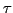
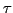
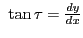
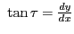
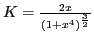

Next: Radius of curvature Up: Curvature; radius of curvature Previous: Curvature at a point Contents Index
It is evident that if, in the last section, instead
of measuring the angles which the tangents made with
the  -axis, we had denoted by  and
-axis, we had denoted by  and
 the angles made by the tangents with
any arbitrarily fixed line, the different steps would
in no wise have been changed, and consequently the results
are entirely independent of the system of coordinates
used. However, since the equations of the curves we
shall consider are all given in either rectangular
or polar coordinates, it is necessary to deduce
formulas for
the angles made by the tangents with
any arbitrarily fixed line, the different steps would
in no wise have been changed, and consequently the results
are entirely independent of the system of coordinates
used. However, since the equations of the curves we
shall consider are all given in either rectangular
or polar coordinates, it is necessary to deduce
formulas for  in terms of both. We have
 by §4.9, or
.
Differentiating with respect to
in terms of both. We have
 by §4.9, or
.
Differentiating with respect to  , using XX in §5.1,
, using XX in §5.1,
The latus rectum of a conic section is the chord parallel to the directrix and passing through the single focus, or one of the two foci. For more details, see for example http://en.wikipedia.org/wiki/Semi-latus_rectum.
Solution.
 ;
.
Substituting in (12.3),
;
.
Substituting in (12.3),
 ,
giving the curvature at any point.
At the upper end of the latus rectum ,
,
giving the curvature at any point.
At the upper end of the latus rectum ,
While in our work it is generally only the numerical value
of  that is of importance, yet we can give a geometric
meaning to its sign. Throughout our work we have taken the
positive sign of the radical
.
Therefore
that is of importance, yet we can give a geometric
meaning to its sign. Throughout our work we have taken the
positive sign of the radical
.
Therefore  will be positive or negative at the same time that
will be positive or negative at the same time that
 is, i.e., (by §8.8), according as the curve is concave upwards or concave downwards.
is, i.e., (by §8.8), according as the curve is concave upwards or concave downwards.
We shall solve this using SAGE.
[fontsize=\small,fontfamily=courier,fontshape=tt,frame=single,label=\sage]
sage: x = var("x")
sage: p = var("p")
sage: y = sqrt(4*p*x)
sage: K = diff(y,x,2)/(1+diff(y,x)^2)^(3/2)
sage: K
-p^2/(2*(p/x + 1)^(3/2)*(p*x)^(3/2))
Taking and simplifying gives the result above.
[fontsize=\small,fontfamily=courier,fontshape=tt,frame=single,label=\sage] sage: K.variables() (p, x) sage: K(p,p) -p^2/(4*sqrt(2)*(p^2)^(3/2)) sage: K(p,p).simplify_rational() -1/(4*sqrt(2)*sqrt(p^2))
Solution.
 ;
.
;
.
Substituting in (12.4), .
In laying out the curves on a railroad it will not do, on account of the high speed of trains, to pass abruptly from a straight stretch of track to a circular curve. In order to make the change of direction gradual, engineers make use of transition curves to connect the straight part of a track with a circular curve. Arcs of cubical parabolas are generally employed as transition curves.
Now we do this in SAGE:
[fontsize=\small,fontfamily=courier,fontshape=tt,frame=single,label=\sage]
sage: rho = var("rho")
sage: t = var("t")
sage: r = var("r")
sage: a = var("a")
sage: r = exp(a*t)
sage: K = (r^2-r*diff(r,t,2)+2*diff(r,t)^2)/(r^2+diff(r,t)^2)^(3/2)
sage: K
1/sqrt(a^2*e^(2*a*t) + e^(2*a*t))
sage: K.simplify_rational()
e^(-(a*t))/sqrt(a^2 + 1)
Solution.
,
.
Substituting in (12.3),
.
(a) At  ,
radians per mile = per mile.
(b) At
,
radians per mile =
,
radians per mile = per mile.
(b) At
,
radians per mile =  per mile.
(c) At
,
radians per mile = per mile.
per mile.
(c) At
,
radians per mile = per mile.